Everything the tutor can put on the left of the screen, by scenario. In a run, a picture appears with the opening question or after the particle account, and a simulation opens at the step named. A simulation's address carries the problem's own numbers; from here it opens with its defaults. Back to the tutor.
ch10_cc
The Rubbing Alcohol Chill (worked)
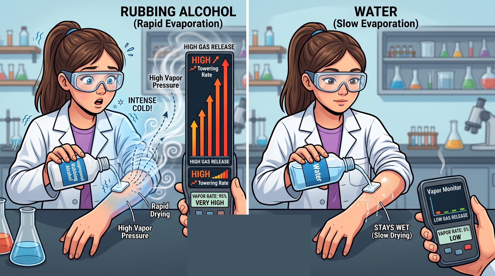
Missing on the site: media/ch10_cc/ch10_alcohol_vs_water_blocked.jpg'">Picture with the opening question (media/ch10_cc/ch10_alcohol_vs_water_blocked.jpg) Two panels. Left: a student dabs rubbing alcohol on her arm, shivers, and a vapor monitor reads very high. Right: the same student dabs water, her arm stays wet, and the monitor reads low. A box labelled The Science is blanked out until you answer.
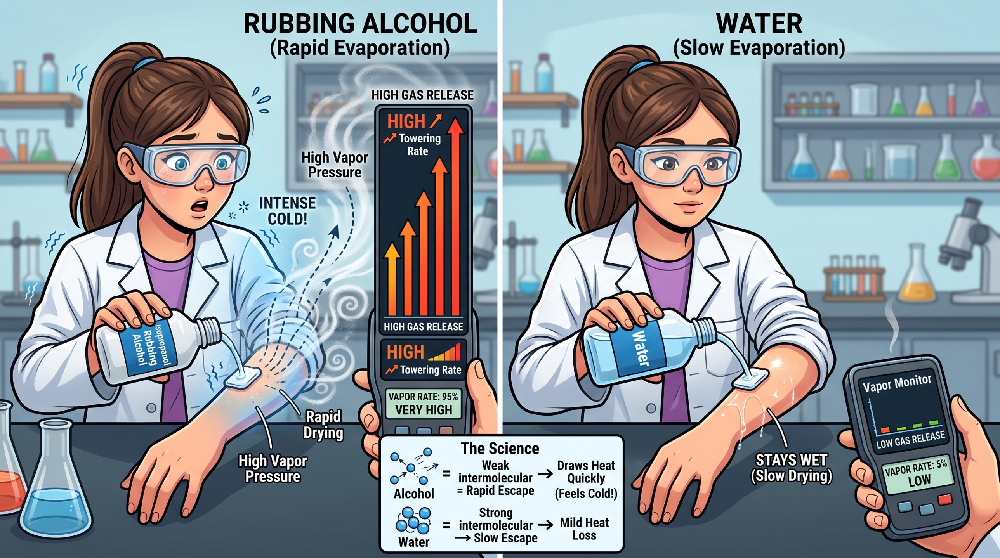
Missing on the site: media/ch10_cc/ch10_alcohol_vs_water.jpg'">Picture after the account is accepted (media/ch10_cc/ch10_alcohol_vs_water.jpg) Two panels. Left: a student dabs rubbing alcohol on her arm, shivers, and a vapor monitor reads very high. Right: the same student dabs water, her arm stays wet, and the monitor reads low. A box labelled The Science is blanked out until you answer.Open the simulation (alcohol_simulator.html)Opens in a run at: meaning. Address in the tutor: media/ch10_cc/alcohol_simulator.html?substance={substance}&theme={theme}
The Syringe Boiling Trick (floater)
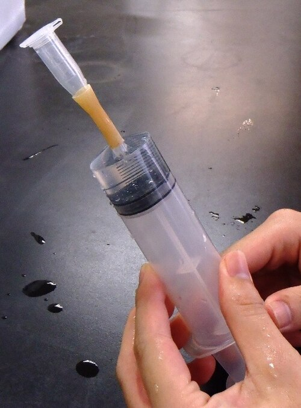
Missing on the site: media/ch10_cc/syringe_boiling_commons.jpg'">Picture with the opening question (media/ch10_cc/syringe_boiling_commons.jpg) Two hands hold a large plastic syringe, tip up. The tip is sealed with a short rubber tube and a small capped plastic tube. A thin layer of water sits between the tip and the plunger's dark rubber seal. Small bubbles show in the water. The plunger rod runs down through the barrel into the hands.
Photo: 郭又鑫, CC BY-SA 3.0 https://creativecommons.org/licenses/by-sa/3.0 via Wikimedia Commons https://commons.wikimedia.org/wiki/File:Boiling_hot_water_below_100_deg_C_under_1atm_environment.JPG
Picture with the opening question (media/ch10_cc/drinking_birds.mp4) Video, 35 seconds, silent. Two toy drinking birds stand on either side of a paper cup of water. Each has a glass body holding colored liquid, a long glass neck, and a felt head with a top hat. Liquid rises up a bird's neck, the bird tips forward, dips its beak in the cup, and swings back up. They take turns.
Video: חזרתי, CC BY 4.0 https://creativecommons.org/licenses/by/4.0 via Wikimedia Commons https://commons.wikimedia.org/wiki/File:DrinkingBird1.webm ; adapted: caption added, trimmed
Open the simulation (drinking_bird_simulator.html)Opens in a run at: meaning. Address in the tutor: media/ch10_cc/drinking_bird_simulator.html?substance={substance}&T={T}&T_known={T_known}&unit={unit}&theme={theme}
The Deep-Sea Vent (floater)
Picture with the opening question (media/ch10_cc/cc_Vents.mp4) Video, 21 seconds, with the sound of the vent. Deep-sea footage from a remotely operated vehicle. Pale mineral chimneys rise from the dark sea floor. Cloudy plumes pour from their tops and drift away. Close up, a thin white stream jets from an opening in the rock. Pale crabs and shrimp crowd the chimney walls. A caption reads MARIANIS TRENCH HYDROTHERMAL VENTS.
Video: NOAA, public domain, via Wikimedia Commons https://commons.wikimedia.org/wiki/File:0501-hydrothermal-vents-640x360.webm ; adapted: trimmed, caption added
Picture with the opening question (media/ch11_colligative/salted_road.jpg) A winter road between snowy hills. The near lane is glazed with bare ice; the far lane is grey slush strewn with white salt crystals. On the shoulder, an open sack labeled Rock Salt spills crystals onto the snow. A roadside thermometer reads minus 5 degrees Celsius.Open the simulation (freezing_point_simulator.html)Opens in a run at: meaning. Address in the tutor: media/ch11/freezing_point_simulator.html?salt={salt}&salt_g={salt_g}&water_kg={water_kg}&theme={theme}
ch13_eq
The Haber-Bosch Harvest (exam)
Picture with the opening question (media/ch13_eq/Haber_initial.jpg) Before the account: a painted farm landscape. On the left, a steel factory with tanks and pipes stands under a sign reading AMMONIUM NITRATE FACTORY; a faint white cloud drifts from it across the sky toward the fields. Cows graze on green hills. On the right, a smiling farmer in overalls checks a tall corn plant beside a field of wheat; a family walks in the distance. After the account: the same landscape titled THE NITROGEN HARVEST & THE HABER-BOSCH CYCLE. On the left, labelled HABER-BOSCH PROCESS, the equation N2(g) + 3H2(g) ⇌ 2NH3(g), one nitrogen molecule (two blue atoms, labelled N2) and three hydrogen molecules (pairs of white atoms, labelled 3 H2) arrowing into a highlighted reactor vessel. Ammonia molecules, one blue nitrogen with three white hydrogens, stream from the reactor along a path labelled AMMONIA (NH3) AS FERTILIZER to the fields, where arrows show soil uptake into corn roots and the words Proteins & DNA. A caption reads: Biological uptake: turning atmospheric gas into the food that feeds billions.
AI image made by the instructor with Google Gemini
Picture after the account is accepted (media/ch13_eq/Haber_final.jpg) Before the account: a painted farm landscape. On the left, a steel factory with tanks and pipes stands under a sign reading AMMONIUM NITRATE FACTORY; a faint white cloud drifts from it across the sky toward the fields. Cows graze on green hills. On the right, a smiling farmer in overalls checks a tall corn plant beside a field of wheat; a family walks in the distance. After the account: the same landscape titled THE NITROGEN HARVEST & THE HABER-BOSCH CYCLE. On the left, labelled HABER-BOSCH PROCESS, the equation N2(g) + 3H2(g) ⇌ 2NH3(g), one nitrogen molecule (two blue atoms, labelled N2) and three hydrogen molecules (pairs of white atoms, labelled 3 H2) arrowing into a highlighted reactor vessel. Ammonia molecules, one blue nitrogen with three white hydrogens, stream from the reactor along a path labelled AMMONIA (NH3) AS FERTILIZER to the fields, where arrows show soil uptake into corn roots and the words Proteins & DNA. A caption reads: Biological uptake: turning atmospheric gas into the food that feeds billions.
AI image made by the instructor with Google Gemini
Open the simulation (haber_simulator.html)Opens in a run at: meaning. Address in the tutor: media/ch13_eq/haber_simulator.html?nN2={nN2}&nH2={nH2}&nNH3={nNH3}&V={V}&theme={theme}
The Martian Fuel Factory (worked)
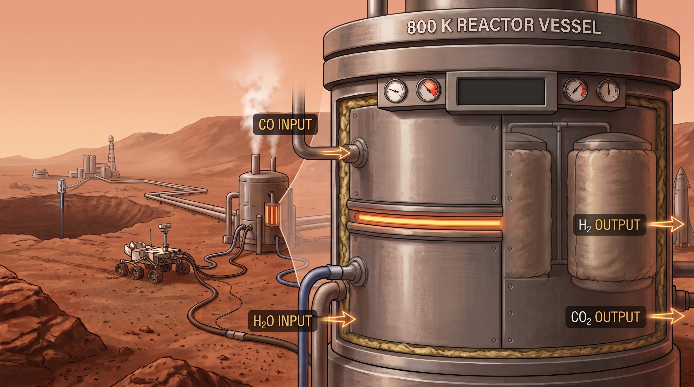
Missing on the site: media/ch13_eq/Martian_Fuel_Initial.jpg'">Picture with the opening question (media/ch13_eq/Martian_Fuel_Initial.jpg) A Mars landscape in rusty orange. In the distance, an atmospheric intake, an ice-drilling rig and pipelines lead to a steel reactor; a six-wheeled rover is connected to it by hoses. A cut-away of the reactor, labelled 800 K REACTOR VESSEL, fills the right side, with gauges and a blank display. Labels show CO INPUT and H2O INPUT going in, and H2 OUTPUT and CO2 OUTPUT coming out. A rocket stands at the far right.
AI image made by the instructor with Google Gemini
Open the simulation (martian_fuel_simulator.html)Opens in a run at: meaning. Address in the tutor: media/ch13_eq/martian_fuel_simulator.html?nCO={nCO}&nH2O={nH2O}&nCO2={nCO2}&nH2={nH2}&V={V}&theme={theme}
The Silent Beaker (floater)
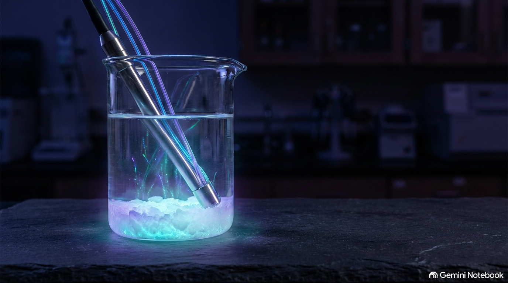
Missing on the site: media/ch13_eq/static_precipitate_tracer_visual.png'">Picture with the opening question (media/ch13_eq/static_precipitate_tracer_visual.png) A cartoon of a glass beaker on a dark lab bench. White solid lies on the bottom under clear water. A metal probe dips into the water. Blue-green streaks rise from the solid; the glow is an artist's effect, since radioactive silver gives off no light.
Missing on the site: media/ch13_eq/pressure_invariance_piston_visual-v3.png'">Picture with the opening question (media/ch13_eq/pressure_invariance_piston_visual-v3.png) A cartoon of a brass and glass cylinder with a piston, full of swirling purple gas. A green light beam crosses the gas toward a detector screen.
Missing on the site: media/ch13_eq/visual_color_paradox_dimerization_visual-v4.png'">Picture with the opening question (media/ch13_eq/visual_color_paradox_dimerization_visual-v4.png) A cartoon of a glass cell with a piston on a dark lab bench, filled with reddish-brown gas. A blue light beam crosses the gas to a photometer whose screen shows a line that drops quickly, then runs flat.
Missing on the site: media/ch14_acidbase/same_label_different_ph_visual.png'">Picture with the opening question (media/ch14_acidbase/same_label_different_ph_visual.png) A stockroom bench in warm light: two clear bottles labeled 2.0 M HCl and 2.0 M CH₃COOH (acetic acid). A pH probe sits in the acetic acid; the meter beside them reads 2.22.
Missing on the site: media/ch14_acidbase/Fishy_bowl.jpg'">Picture with the opening question (media/ch14_acidbase/Fishy_bowl.jpg) A kitchen sink: a whole fresh fish in a glass bowl of water, a hand squeezing lemon juice into it, a pH probe in the water with its meter reading 11.0, and a handheld gas sensor with its light on, held above the bowl.
Missing on the site: media/ch14_acidbase/Eats_glass.jpg'">Picture with the opening question (media/ch14_acidbase/Eats_glass.jpg) A lab bench: a plastic bottle labeled 0.10 M HF, an etched glass slide beside it, and a pH probe in a plastic beaker with its meter reading 2.11.
Missing on the site: media/ch14_acidbase/Bleach_puzzle.jpg'">Picture with the opening question (media/ch14_acidbase/Bleach_puzzle.jpg) A laundry-room shelf: a white jug labeled sodium hypochlorite beside a small beaker with a pH probe; the meter reads 10.70.
Missing on the site: media/ch14_buffer/Sudden_Beaker.jpg'">Picture with the opening question (media/ch14_buffer/Sudden_Beaker.jpg) A stockroom bench: two beakers with pH probes, one labeled water with its meter reading 3.00, one labeled acetate buffer with its meter reading 4.74, and a small dropper bottle of 2.0 M HCl lying between them.
AI image made by the instructor with NotebookLM
Open the simulation (buffer_simulator.html)Opens in a run at: meaning. Address in the tutor: media/ch14_buffer/buffer_simulator.html?species={species}&ca={ca}&cb={cb}&V={V}&theme={theme}
The Sprint (exam)
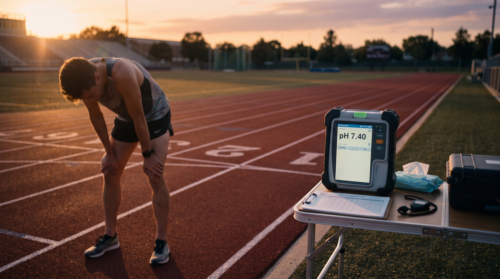
Missing on the site: media/ch14_buffer/The_sprint.jpg'">Picture with the opening question (media/ch14_buffer/The_sprint.jpg) A runner bent over with hands on knees at the finish line of a track at sunset; a portable blood-gas analyzer on a table beside the track reads pH 7.40.
AI image made by the instructor with NotebookLM
Open the simulation (buffer_simulator.html)Opens in a run at: meaning. Address in the tutor: media/ch14_buffer/buffer_simulator.html?species={species}&ca={ca}&cb={cb}&V={V}&theme={theme}
The Eye Drops (floater)
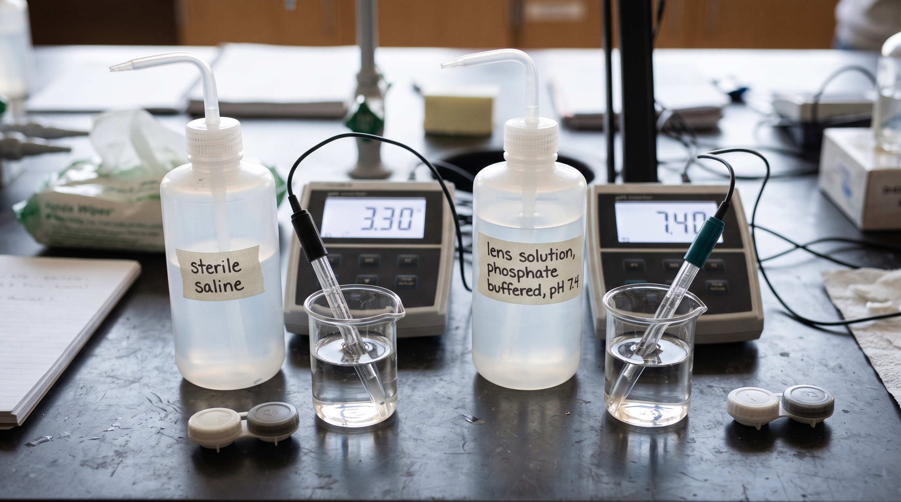
Missing on the site: media/ch14_buffer/Eye_drops.jpg'">Picture with the opening question (media/ch14_buffer/Eye_drops.jpg) A lab bench with two squeeze bottles, sterile saline and phosphate-buffered lens solution, each beside a beaker with a pH probe; the meter by the saline reads 3.30 and the one by the lens solution reads 7.40; contact-lens cases nearby.
AI image made by the instructor with NotebookLM
Open the simulation (buffer_simulator.html)Opens in a run at: meaning. Address in the tutor: media/ch14_buffer/buffer_simulator.html?species={species}&ca={ca}&cb={cb}&V={V}&theme={theme}
Half a Buffer (floater)
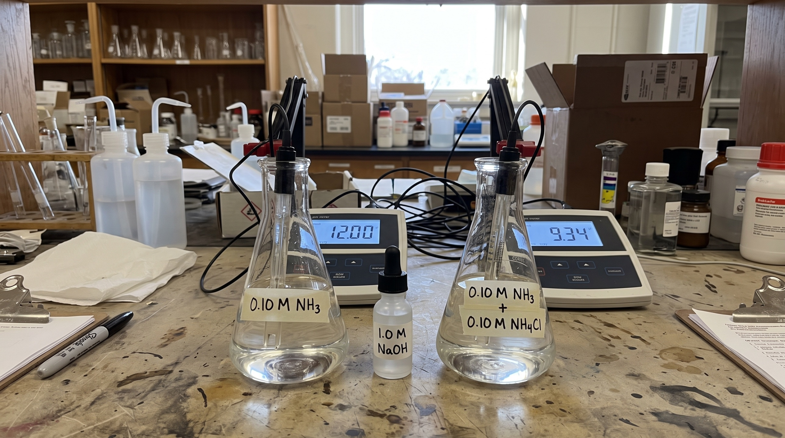
Missing on the site: media/ch14_buffer/Half_a_buffer.jpg'">Picture with the opening question (media/ch14_buffer/Half_a_buffer.jpg) A stockroom bench: two flasks with pH probes, one labeled 0.10 M NH3 with its meter reading 12.00, the other labeled 0.10 M NH3 + 0.10 M NH4Cl with its meter reading 9.34, and a small dropper bottle of 1.0 M NaOH between them.
AI image made by the instructor with NotebookLM
Open the simulation (buffer_simulator.html)Opens in a run at: meaning. Address in the tutor: media/ch14_buffer/buffer_simulator.html?species={species}&ca={ca}&cb={cb}&V={V}&theme={theme}
ch14_ph
Off the Scale (floater)
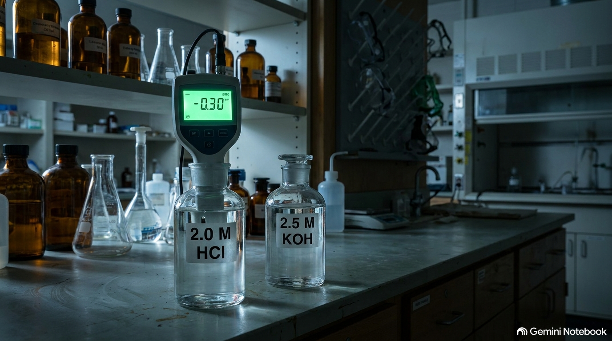
Missing on the site: media/ch14_ph/negative_ph_stockroom_visual.png'">Picture with the opening question (media/ch14_ph/negative_ph_stockroom_visual.png) A stockroom bench at night. A pH meter's probe stands in a clear bottle labeled 2.0 M HCl; its screen reads −0.30. A second clear bottle labeled 2.5 M KOH stands beside it.
Missing on the site: media/ch14_ph/Corn_soak.jpg'">Picture with the opening question (media/ch14_ph/Corn_soak.jpg) A kitchen counter: a glass bowl of corn kernels soaking in milky-white water, a pH probe in the bowl, a meter reading 12.1, a bag labeled Pickling Lime (cal), and a stack of corn tortillas.
Missing on the site: media/ch14_ph/Stockroom_morning-2.jpg'">Picture with the opening question (media/ch14_ph/Stockroom_morning-2.jpg) A stockroom just after sunrise: a glass water still, steam rising from a beaker of hot distilled water with a pH probe in it, a meter reading 6.52, a wall clock near 7:45, and bottles labeled HNO₃ and Ba(OH)₂ on a shelf.
Missing on the site: media/ch14_ph/Concrete_burn.jpg'">Picture with the opening question (media/ch14_ph/Concrete_burn.jpg) A freshly poured gray concrete slab in late-afternoon light, with two knee-shaped dents in the wet surface, a trowel, unused knee pads on the grass, and a pH strip turned deep blue-violet beside its color chart.
Missing on the site: media/ch14_titration/Vinegar_lab.jpg'">Picture with the opening question (media/ch14_titration/Vinegar_lab.jpg) A general chemistry lab: a burette over a flask of faint pink liquid on a stir plate, a pH meter reading 8.70, and bottles labeled vinegar and 0.100 M NaOH; students work in the background.
AI image made by the instructor with NotebookLM
Open the simulation (titration_simulator.html)Opens in a run at: meaning. Address in the tutor: media/ch14_titration/titration_simulator.html?species={species}&pair={pair}&ca={ca}&va={va}&cb={cb}&vb={vb}&theme={theme}
The Kombucha Check (exam)
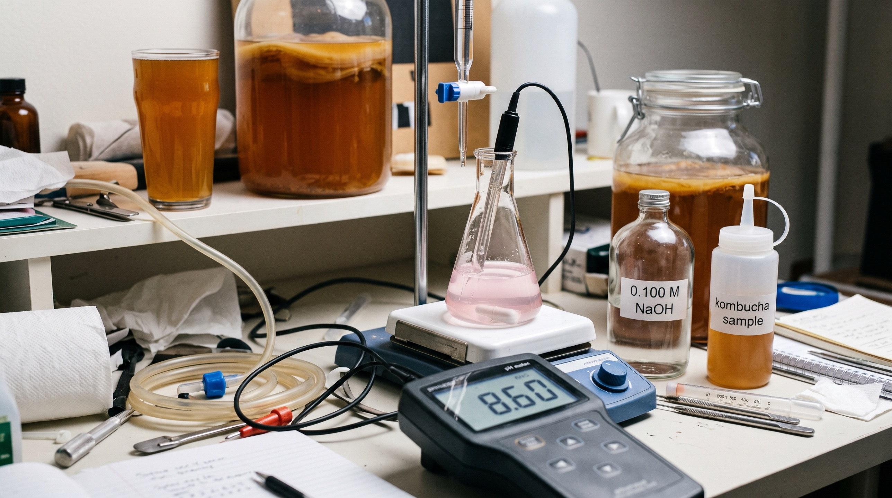
Missing on the site: media/ch14_titration/Kombucha_check.jpg'">Picture with the opening question (media/ch14_titration/Kombucha_check.jpg) A brewery lab corner: jars and a glass of amber kombucha behind a burette over a flask of faint pink liquid; a pH meter reads 8.60; bottles labeled 0.100 M NaOH and kombucha sample.
AI image made by the instructor with NotebookLM
Open the simulation (titration_simulator.html)Opens in a run at: meaning. Address in the tutor: media/ch14_titration/titration_simulator.html?species={species}&pair={pair}&ca={ca}&va={va}&cb={cb}&vb={vb}&theme={theme}
The Stockroom Standard (floater)
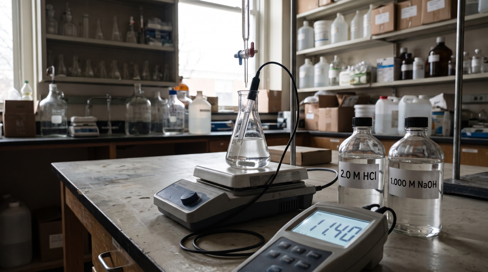
Missing on the site: media/ch14_titration/Stockroom_standard.jpg'">Picture with the opening question (media/ch14_titration/Stockroom_standard.jpg) A stockroom bench: a burette over a flask on a stir plate, a pH probe in the flask with its meter reading 11.40, and bottles labeled 2.0 M HCl and 1.000 M NaOH.
AI image made by the instructor with NotebookLM
Open the simulation (titration_simulator.html)Opens in a run at: meaning. Address in the tutor: media/ch14_titration/titration_simulator.html?species={species}&pair={pair}&ca={ca}&va={va}&cb={cb}&vb={vb}&theme={theme}
The Sour Whey (floater)
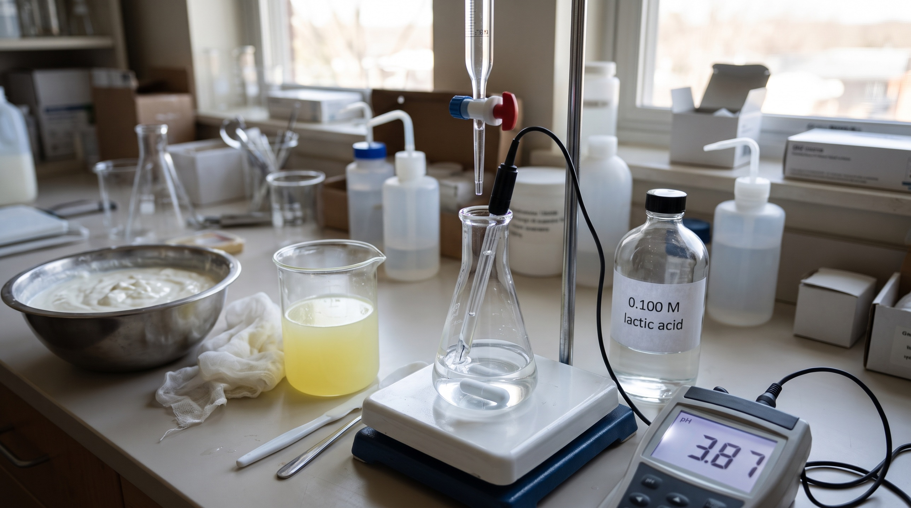
Missing on the site: media/ch14_titration/Sour_whey.jpg'">Picture with the opening question (media/ch14_titration/Sour_whey.jpg) A dairy lab bench: a bowl of strained yogurt, a beaker of pale yellow whey, a burette over a colorless flask with a pH probe, a meter reading 3.87, and a bottle labeled 0.100 M lactic acid.
AI image made by the instructor with NotebookLM
Open the simulation (titration_simulator.html)Opens in a run at: meaning. Address in the tutor: media/ch14_titration/titration_simulator.html?species={species}&pair={pair}&ca={ca}&va={va}&cb={cb}&vb={vb}&theme={theme}
ch15_common_ion
Washing the Precipitate (worked)
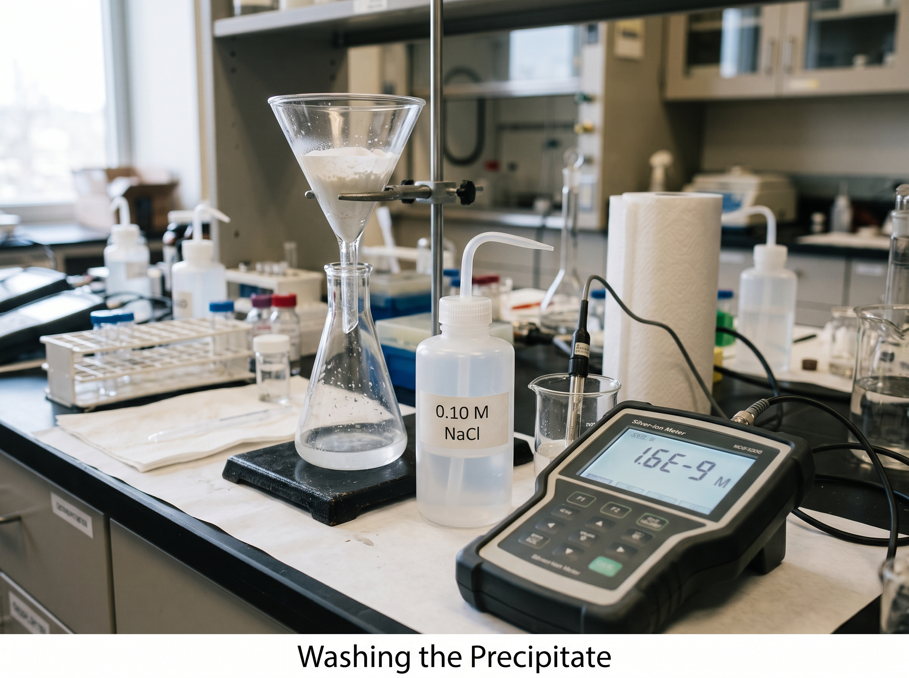
Missing on the site: media/ch15/Washing_the_precipitate.jpg'">Picture with the opening question (media/ch15/Washing_the_precipitate.jpg) A lab bench: a funnel holding white silver chloride over a flask, a wash bottle labeled 0.10 M NaCl, and a silver-ion meter reading 1.6E-9 M.
AI image made by the instructor with Gemini
Open the simulation (solubility_simulator.html)Opens in a run at: meaning. Address in the tutor: media/ch15/solubility_simulator.html?mode=common&salt={salt}&common={common}&c_common={c_common}&theme={theme}
The Barium Antidote (exam)
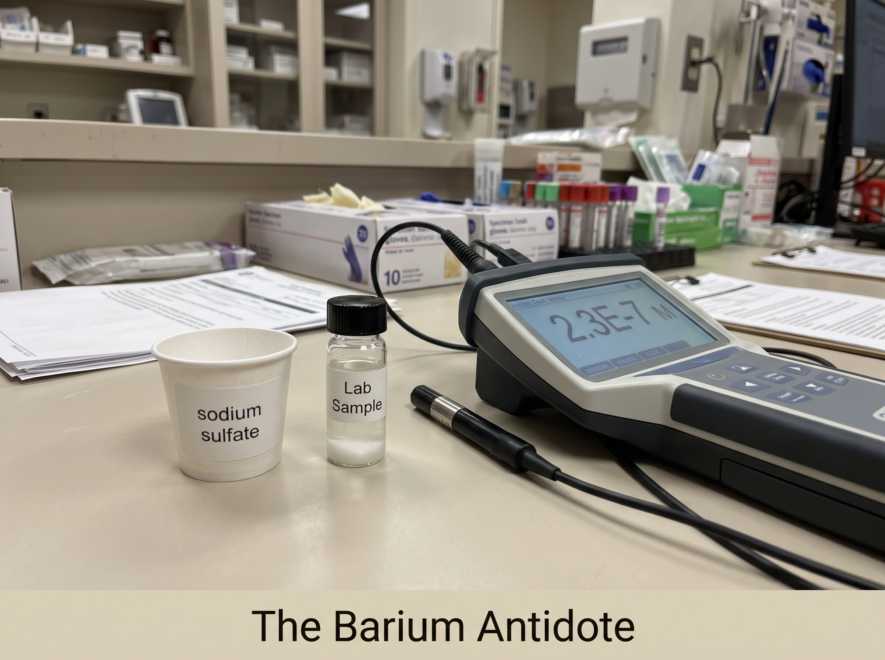
Missing on the site: media/ch15/Barium_antidote.jpg'">Picture with the opening question (media/ch15/Barium_antidote.jpg) A clinic counter: a cup labeled sodium sulfate, a vial labeled Lab Sample with white precipitate at the bottom, and an ion meter reading 2.3E-7 M.
AI image made by the instructor with Gemini
Open the simulation (solubility_simulator.html)Opens in a run at: meaning. Address in the tutor: media/ch15/solubility_simulator.html?mode=common&salt={salt}&common={common}&c_common={c_common}&theme={theme}
Magnesium from Seawater (floater)
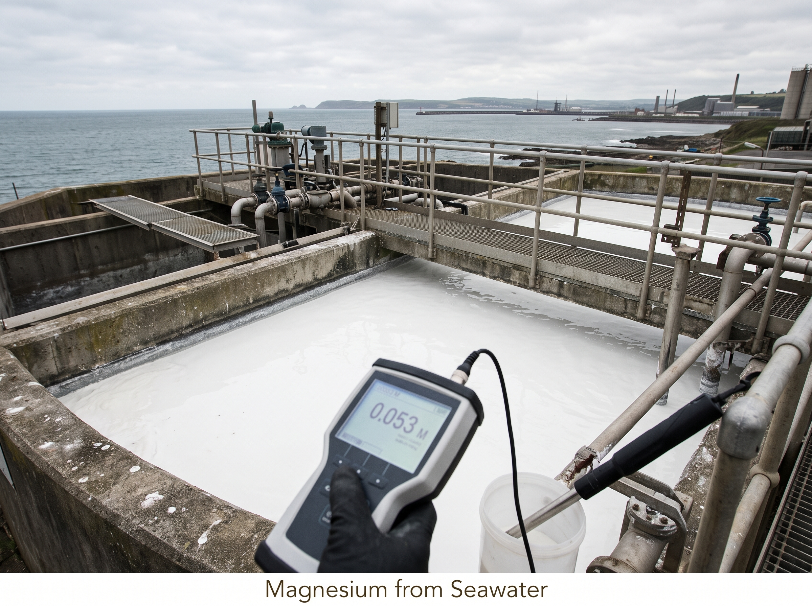
Missing on the site: media/ch15/Magnesium_from_seawater.jpg'">Picture with the opening question (media/ch15/Magnesium_from_seawater.jpg) A seaside plant: concrete settling tanks of white magnesium hydroxide slurry beside the sea, and a gloved hand holding a meter reading 0.053 M.
AI image made by the instructor with Gemini
Open the simulation (solubility_simulator.html)Opens in a run at: meaning. Address in the tutor: media/ch15/solubility_simulator.html?mode=common&salt={salt}&common={common}&c_common={c_common}&theme={theme}
The Fluoride Rinse (floater)
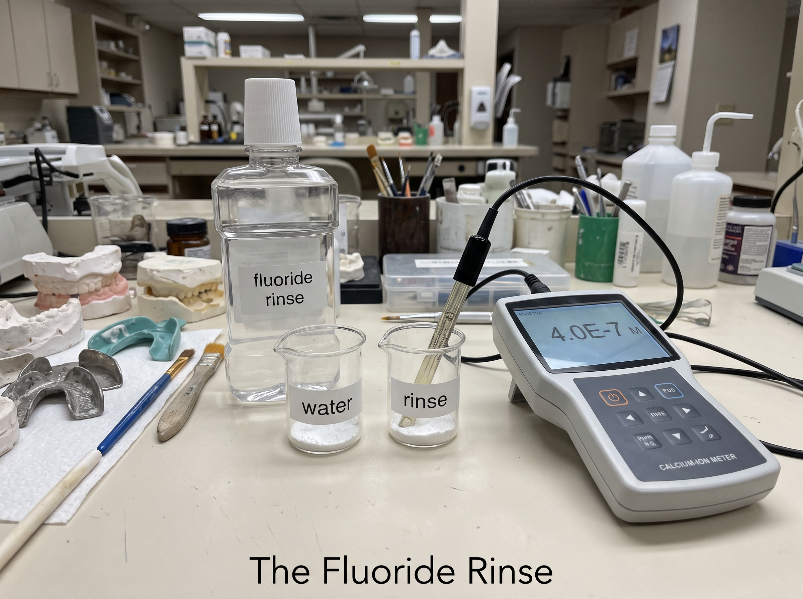
Missing on the site: media/ch15/Fluoride_rinse.jpg'">Picture with the opening question (media/ch15/Fluoride_rinse.jpg) A dental lab bench: a bottle labeled fluoride rinse, two small beakers labeled water and rinse with white powder in each, and a calcium-ion meter reading 4.0E-7 M with its probe in the rinse.
AI image made by the instructor with Gemini
Open the simulation (solubility_simulator.html)Opens in a run at: meaning. Address in the tutor: media/ch15/solubility_simulator.html?mode=common&salt={salt}&common={common}&c_common={c_common}&theme={theme}
ch15_complex
The Disappearing Precipitate (worked)
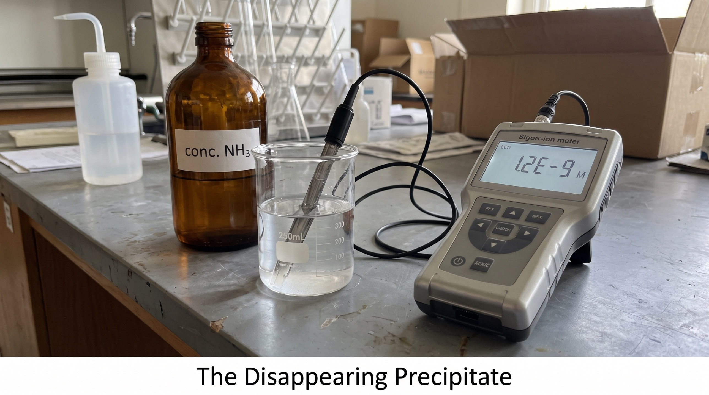
Missing on the site: media/ch15/Disappearing_precipitate.jpg'">Picture with the opening question (media/ch15/Disappearing_precipitate.jpg) A lab bench: a bottle labeled conc. NH3 beside a beaker of clear liquid with an ion probe, and a meter reading 1.2E-9 M.
Missing on the site: media/ch15/Darkroom_fixer.jpg'">Picture with the opening question (media/ch15/Darkroom_fixer.jpg) A red-lit darkroom: developing trays, one labeled fixer with a black-and-white print in it and a probe, and a meter on the shelf reading 1.9E-15 M.
Missing on the site: media/ch15/Deep_blue.jpg'">Picture with the opening question (media/ch15/Deep_blue.jpg) A lab bench: a flask of pale blue solution labeled CuSO4 beside a flask of deep blue solution labeled CuSO4 + NH3, and a colorimeter reading A = 1.25.
Missing on the site: media/ch15/Antacid_in_lye.jpg'">Picture with the opening question (media/ch15/Antacid_in_lye.jpg) A lab bench: a bottle labeled 6 M NaOH, a beaker of clear liquid with white solid at the bottom and a probe, an unbranded white bottle, and a meter reading 0.000 M.
Missing on the site: media/ch15/Barium_milkshake.jpg'">Picture with the opening question (media/ch15/Barium_milkshake.jpg) A hospital X-ray room: a glass of thick white barium sulfate suspension with a straw, a beaker labeled barium sulfate (settled) with white solid under clear liquid and a conductivity probe in it, and a meter reading 43 µS/cm.
Missing on the site: media/ch15/Milk_of_magnesia.jpg'">Picture with the opening question (media/ch15/Milk_of_magnesia.jpg) A bathroom counter: a bottle labeled Milk of Magnesia beside a glass with white solid settled under clear liquid, a pH probe in the clear liquid, and a meter reading 10.42.
Missing on the site: media/ch15/Kidney_stone.jpg'">Picture with the opening question (media/ch15/Kidney_stone.jpg) A lab bench: small brown kidney stones in a dish with tweezers, a flask of clear water over settled white powder with an electrode labeled calcium-ion electrode in it, and a meter reading 4.4E-5 M.
Missing on the site: media/ch15/Silver_halide_lineup.jpg'">Picture with the opening question (media/ch15/Silver_halide_lineup.jpg) A stockroom shelf: three jars labeled AgCl (white powder), AgBr (cream) and AgI (pale yellow), with a silver-ion meter reading 1.3E-5 M.
Missing on the site: media/ch15/Chloride_test.jpg'">Picture with the opening question (media/ch15/Chloride_test.jpg) A stockroom bench: a cloudy tube labeled tap water and a clear tube labeled deionized, a dropper bottle labeled 0.010 M AgNO3, and a turbidity meter reading 85 NTU.
AI image made by the instructor with Gemini
Open the simulation (solubility_simulator.html)Opens in a run at: meaning. Address in the tutor: media/ch15/solubility_simulator.html?mode=mix&salt={salt}&c_cat={c_cat}&c_an={c_an}&theme={theme}
The Kidney Stone Risk (exam)
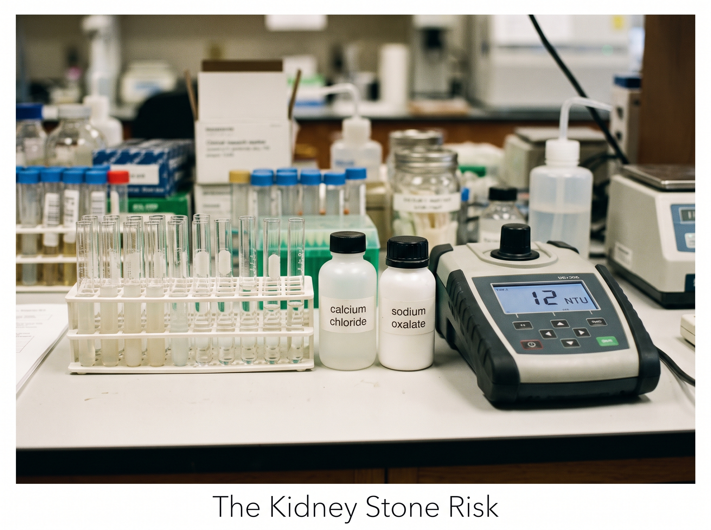
Missing on the site: media/ch15/Kidney_stone_risk.jpg'">Picture with the opening question (media/ch15/Kidney_stone_risk.jpg) A lab bench: a rack of tubes, some cloudy and some clear, bottles labeled calcium chloride and sodium oxalate, and a turbidity meter reading 12 NTU.
AI image made by the instructor with Gemini
Open the simulation (solubility_simulator.html)Opens in a run at: meaning. Address in the tutor: media/ch15/solubility_simulator.html?mode=mix&salt={salt}&c_cat={c_cat}&c_an={c_an}&theme={theme}
The Golden Rain (floater)
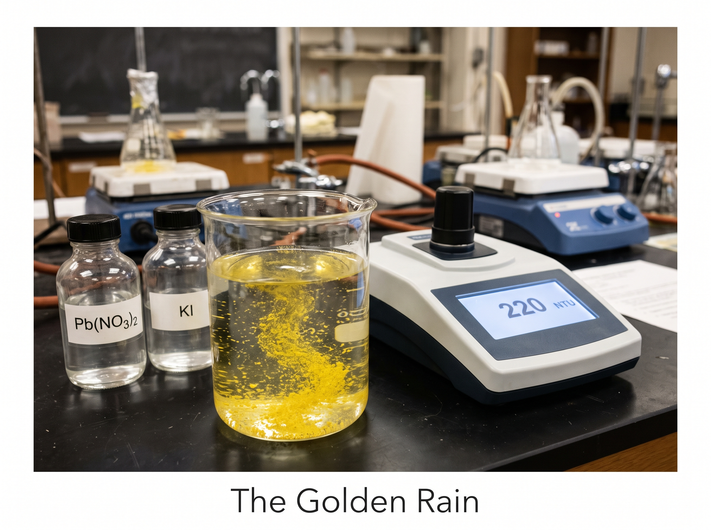
Missing on the site: media/ch15/Golden_rain.jpg'">Picture with the opening question (media/ch15/Golden_rain.jpg) A demonstration bench: a beaker with bright yellow lead(II) iodide swirling through the liquid, bottles labeled Pb(NO3)2 and KI, and a turbidity meter reading 220 NTU.
AI image made by the instructor with Gemini
Open the simulation (solubility_simulator.html)Opens in a run at: meaning. Address in the tutor: media/ch15/solubility_simulator.html?mode=mix&salt={salt}&c_cat={c_cat}&c_an={c_an}&theme={theme}
The Hard-Water Scale (floater)
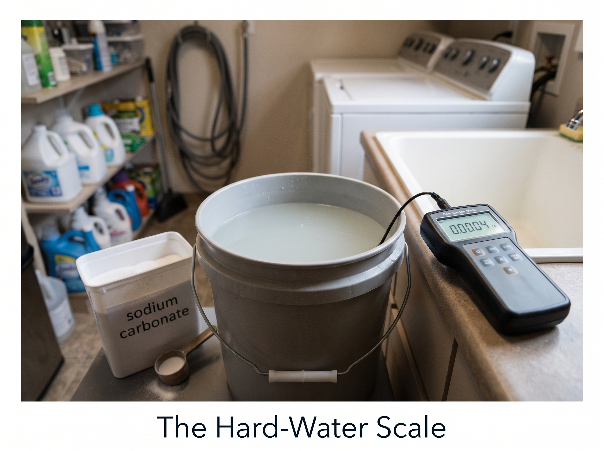
Missing on the site: media/ch15/Hard_water_scale.jpg'">Picture with the opening question (media/ch15/Hard_water_scale.jpg) A laundry room: a bucket of cloudy water, a box labeled sodium carbonate with a scoop, and a calcium-ion meter reading 0.0004 M.
AI image made by the instructor with Gemini
Open the simulation (solubility_simulator.html)Opens in a run at: meaning. Address in the tutor: media/ch15/solubility_simulator.html?mode=mix&salt={salt}&c_cat={c_cat}&c_an={c_an}&theme={theme}
ch16_G_and_K
The Silver Chloride Ksp (worked)
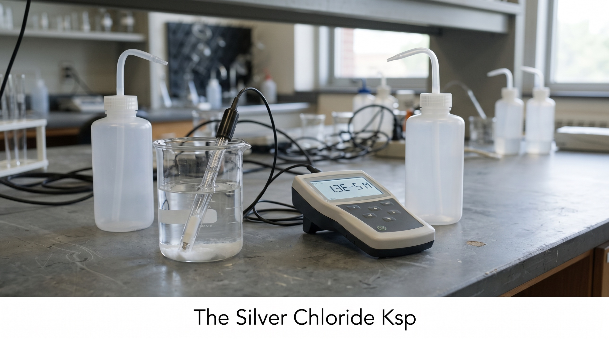
Missing on the site: media/ch16/Silver_chloride_Ksp.jpg'">Picture with the opening question (media/ch16/Silver_chloride_Ksp.jpg)
Missing on the site: media/ch16/Water_boils_97.jpg'">Picture with the opening question (media/ch16/Water_boils_97.jpg)
AI image made by the instructor with Gemini
Open the simulation (free_energy_simulator.html)Opens in a run at: meaning. Address in the tutor: media/ch16/free_energy_simulator.html?reaction={reaction}&T={T}&theme={theme} (phase); ch16/G_and_Q_simulator.html?reaction={reaction}&P={P}&theme={theme} (nonstandard)
The Solvent Shelf (exam)
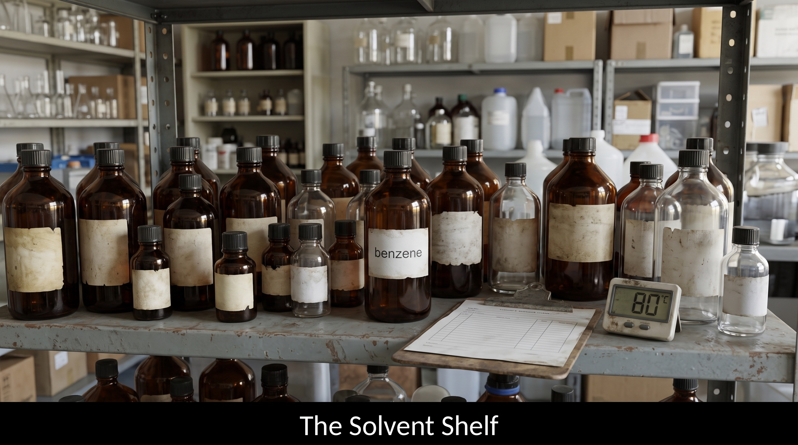
Missing on the site: media/ch16/Solvent_shelf.jpg'">Picture with the opening question (media/ch16/Solvent_shelf.jpg)
AI image made by the instructor with Gemini
Open the simulation (free_energy_simulator.html)Opens in a run at: meaning. Address in the tutor: media/ch16/free_energy_simulator.html?reaction={reaction}&T={T}&theme={theme} (phase); ch16/G_and_Q_simulator.html?reaction={reaction}&P={P}&theme={theme} (nonstandard)
The Pressurized Reactor (floater)
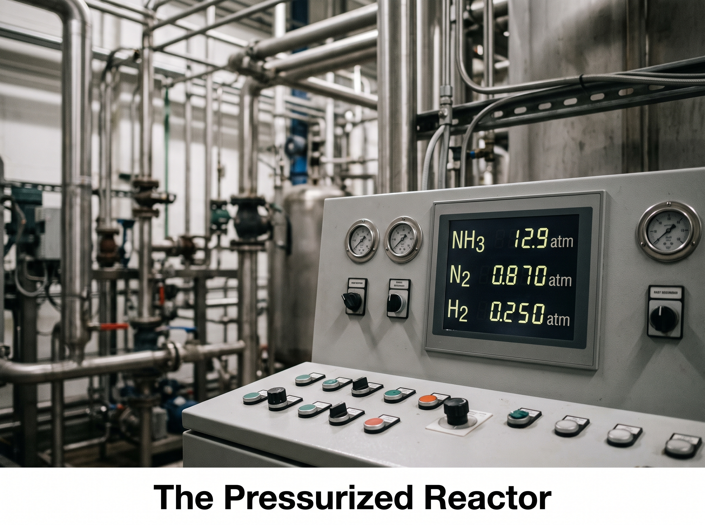
Missing on the site: media/ch16/Pressurized_reactor.jpg'">Picture with the opening question (media/ch16/Pressurized_reactor.jpg)
AI image made by the instructor with Gemini
Open the simulation (free_energy_simulator.html)Opens in a run at: meaning. Address in the tutor: media/ch16/free_energy_simulator.html?reaction={reaction}&T={T}&theme={theme} (phase); ch16/G_and_Q_simulator.html?reaction={reaction}&P={P}&theme={theme} (nonstandard)
Wet Laundry (floater)
Missing on the site: media/ch16/Wet_laundry.jpg'">Picture with the opening question (media/ch16/Wet_laundry.jpg)
AI image made by the instructor with Gemini
Open the simulation (free_energy_simulator.html)Opens in a run at: meaning. Address in the tutor: media/ch16/free_energy_simulator.html?reaction={reaction}&T={T}&theme={theme} (phase); ch16/G_and_Q_simulator.html?reaction={reaction}&P={P}&theme={theme} (nonstandard)
ch16_free_energy
Water Won't Boil at Room Temperature (worked)
Missing on the site: media/ch16/Water_wont_boil.jpg'">Picture with the opening question (media/ch16/Water_wont_boil.jpg)
Missing on the site: media/ch17/Daniell_cell_runs_down.jpg'">Picture with the opening question (media/ch17/Daniell_cell_runs_down.jpg)
AI image made by the instructor with Gemini
Open the simulation (cell_simulator.html)Opens in a run at: meaning. Address in the tutor: media/ch17/cell_simulator.html?left={left}&right={right}&cl={cl}&cr={cr}&theme={theme}
The Dying Battery (exam)
Missing on the site: media/ch17/Dying_battery.jpg'">Picture with the opening question (media/ch17/Dying_battery.jpg)
AI image made by the instructor with Gemini
Open the simulation (cell_simulator.html)Opens in a run at: meaning. Address in the tutor: media/ch17/cell_simulator.html?left={left}&right={right}&cl={cl}&cr={cr}&theme={theme}
The Concentration Cell (floater)
Missing on the site: media/ch17/Concentration_cell.jpg'">Picture with the opening question (media/ch17/Concentration_cell.jpg)
AI image made by the instructor with Gemini
Open the simulation (cell_simulator.html)Opens in a run at: meaning. Address in the tutor: media/ch17/cell_simulator.html?left={left}&right={right}&cl={cl}&cr={cr}&theme={theme}
The pH Meter Inside (floater)
Missing on the site: media/ch17/pH_meter_inside.jpg'">Picture with the opening question (media/ch17/pH_meter_inside.jpg)
AI image made by the instructor with Gemini
Open the simulation (cell_simulator.html)Opens in a run at: meaning. Address in the tutor: media/ch17/cell_simulator.html?left={left}&right={right}&cl={cl}&cr={cr}&theme={theme}
ch19_cft
The Magnet Test (worked)
Missing on the site: media/ch19/Magnet_test.jpg'">Picture with the opening question (media/ch19/Magnet_test.jpg)

![Before the account: a painted farm landscape. On the left, a steel factory with tanks and pipes stands under a sign reading AMMONIUM NITRATE FACTORY; a faint white cloud drifts from it across the sky toward the fields. Cows graze on green hills. On the right, a smiling farmer in overalls checks a tall corn plant beside a field of wheat; a family walks in the distance. After the account: the same landscape titled THE NITROGEN HARVEST & THE HABER-BOSCH CYCLE. On the left, labelled HABER-BOSCH PROCESS, the equation N2(g) + 3H2(g) ⇌ 2NH3(g), one nitrogen molecule (two blue atoms, labelled N2) and three hydrogen molecules (pairs of white atoms, labelled 3 H2) arrowing into a highlighted reactor vessel. Ammonia molecules, one blue nitrogen with three white hydrogens, stream from the reactor along a path labelled AMMONIA (NH3) AS FERTILIZER to the fields, where arrows show soil uptake into corn roots and the words Proteins & DNA. A caption reads: Biological uptake: turning atmospheric gas into the food that feeds billions.](media/ch13_eq/Haber_initial.jpg)
![Before the account: a painted farm landscape. On the left, a steel factory with tanks and pipes stands under a sign reading AMMONIUM NITRATE FACTORY; a faint white cloud drifts from it across the sky toward the fields. Cows graze on green hills. On the right, a smiling farmer in overalls checks a tall corn plant beside a field of wheat; a family walks in the distance. After the account: the same landscape titled THE NITROGEN HARVEST & THE HABER-BOSCH CYCLE. On the left, labelled HABER-BOSCH PROCESS, the equation N2(g) + 3H2(g) ⇌ 2NH3(g), one nitrogen molecule (two blue atoms, labelled N2) and three hydrogen molecules (pairs of white atoms, labelled 3 H2) arrowing into a highlighted reactor vessel. Ammonia molecules, one blue nitrogen with three white hydrogens, stream from the reactor along a path labelled AMMONIA (NH3) AS FERTILIZER to the fields, where arrows show soil uptake into corn roots and the words Proteins & DNA. A caption reads: Biological uptake: turning atmospheric gas into the food that feeds billions.](media/ch13_eq/Haber_final.jpg)